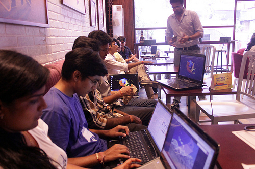
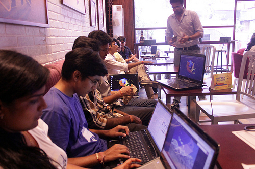

-
Find a space
See if you can get outside a classroom because classrooms tend to have negative connotations for learners. See if you can partner with a school or non-profit that can handle your need for space - and/or transportation - at minimal or no cost to your club.-
an Independent Cafe

Buy your event snacks and drinks (or have participants buy their own) at a local cafe in exchange for a reserved space. Read about Mozillian Gauthamraj's experiences in Cyber Cafés!
-
the Local Library

Libraries are community hubs, and librarians are usually enthused about having digital literacy events take place in their spaces. Just take a look at this infographic!
-
a Hackerspace

Be sure you reserve a comfortable venue where you can move the chairs and sit together in a circle. Ensure there is Internet, power and good lighting. Nearby Hackerspaces are usually perfect for an event!
-
a Museum

Plan to tie in topics relevant to the museum, then speak with the museum director about your event. Ask the museum if they'll require an admission fee.
-
an Independent Cafe

-
Spread the Word
Personally invite as many learners as possible to your club and use your networks to get the word out. Remember to recruit a number of facilitators proportionate to the number of learners you anticipate attending club. We like a ratio of 1:8 or 1:12 facilitators to learners, but if people are engaged with the work - and you are super prepared - you can sometimes get away with something more like 1:20.
Other ideas to promote your Club
- Set up a Site You will share your planning process and ideas widely. Create a page for your event. You can use webmaker.org (soon), wordpress.com, blogger.com, or tumblr.com to create a free page (free is good).
- Get Creative Show the world what you are up to with consistent posts to social media site including: Facebook, Twitter, Flickr, YouTube/ Vimeo and blogs. Get creative and make your own buzz in these spaces.
- Define a Hashtag Create a hashtag for the event. Throughout the event have participants and your crew tweet and post on social networks.
- Craft a Press Release A press release is usually a one-page document describing your event, your organization and anything noteworthy that you might want to communicate. This document should be carefully written as reporters will refer to it when writing their stories. Remember to include clear contact information so that members of the media know who to follow up with. Here's an example:

- Beef Up Your Contacts Send out the press release at least a week before the event. Notify Mozilla as well as mainstream media outlets in your community — newspapers, TV and radio — think about other outlets and organizations that could spread the word about your jam. Use talking points to follow up with these contacts.
- Submit your URLs and social media links to the Community Discourse.
-
Double-Check Everything
You'll want to double check that your space is available for your Club, and that your equipment and materials are available for when learners arrive.
- Make sure you have enough computers or that you have all the materials you need to #teachtheweb in low-fi and no-fi ways.
- Make sure your materials reflect community norms while allowing kids the opportunity to express themselves.
- Position your club as a good neighbor and asset to your community, not as a blatant disruption or challenge to the status quo.
- An impactful club will get kids and their parents and neighbors wondering how they ever lived without it.
-
Keep Spreading the Word about your Club
Plan to share the work you're doing in your club and host celebrations. Every so often, invite community members to join the club for a day or two, and build some Demo or Expo Fairs into your club's schedule. Keep a blog that documents the club's day-to-day work, as well as its special events. Invite kids to create dev blogs of their own. Be sure to protect time for championing your kids work at the club and in the community. Set dates and deadlines for sharing and meet them.
-
Plan for stability and sustainability
- What does your club need to continuing operating without you?
- With a dozen more participants?
- If you lose your space?
- What happens when the Internet goes down?
- How will people know if you've cancelled tonight's session of club?
- Set up a fall-back location.
- Canvas for volunteers in case of cancellation.